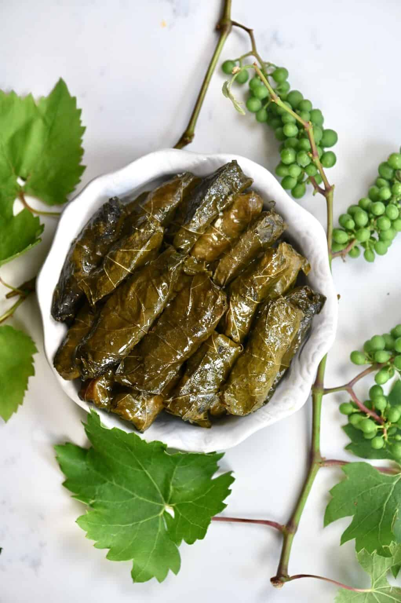

Veggie Dolmas

Delicious finger food: Dolmas are a perfect appetizer.
Dolmas are stuffed grape leaves, a common dish among countries that were once part of the Ottoman Empire.
Some Dolmas are made with meat or seafood, but this recipe will be vegetarian! These parcels are stuffed with flavorful herbs, vegetables,
and rice. It's sure to be an instant favorite!
Ingredients:
- 80 Vine or Grape leaves- fresh or preserved
- 1 cup of long grain rice
- 2 medium tomatoes
- 0.7 oz of fresh mint
- 3.5 oz of fresh parsley
- 5 green onions
- 4 small lemons
- 1/2 cup of olive oil
- 1.5 tsp of salt
- 1 tsp of black pepper
- 1 tsp of cinnamon
- 1/2 cup of water
- 1 small potato (To lay on the bottom of the pot. Unused or broken leaves can work too!)
Instructions:
Preparation:
- If using fresh vine leaves, wash very well, and blanch with boiling water for 1-3 minutes to soften, then rinse and allow to cool completely.
- Rinse the rice thoroughly until the water is clear. Usually, it takes 3-4 rinses. This will remove the starch and keep it from becoming gummy.
- Next, finely chop all the veggies and add them to a large bowl. You can do this by hand or use a food processor for a finer chop.
- Add all of the stuffing ingredients to a large bowl and mix well to thoroughly combine.
Assembly:
- Lay your leaves out with the leaf 'bottom' side up (where you can feel all the leaf veins), with the shiny side down. And spoon one teaspoon of the rice mixture onto each leaf. Be careful not to overfill, as the rice will need space to expand while cooking.
- To roll the leaves is fairly simple. Bring the two sides in and then roll to close- similarly to rolling spring rolls. Roll tightly, while still allowing space for the rice to expand as it cooks.*
- Once rolled, you can freeze any leftovers that you know you don't want to cook immediately (the cooked leaves can also be frozen if there are any leftovers).
Click here for the dolma rolling technique!
Cooking:
- Place the potato slices at the bottom of a large or medium pan (depending on how many stuffed grape leaves you are cooking). Alternatively, you can use any broken and un-used leaves to lay on the bottom of the pan.
- Place the stuffed vine leaves in the pan, seam side down. Make sure they are tightly packed into the pan. This will stop them from moving and falling apart while cooking.
- Mix the water, olive oil, and lemon juice and pour on top of the stuffed vine leaves (there should be enough to cover them).
- Place an inverted plate or pan on top of the vine leaves to hold them in place and simmer for 35 to 40 minutes, with the lid on.
- You can remove the plate once the vine leaves have soaked up the majority of the water, and then continue to cook or leave it on for the entirety of the cooking.
- Remove from the heat, once cooked. You can leave them to rest for 20-30 minutes, for best results. But, if you can’t wait, then they are ready to eat immediately!